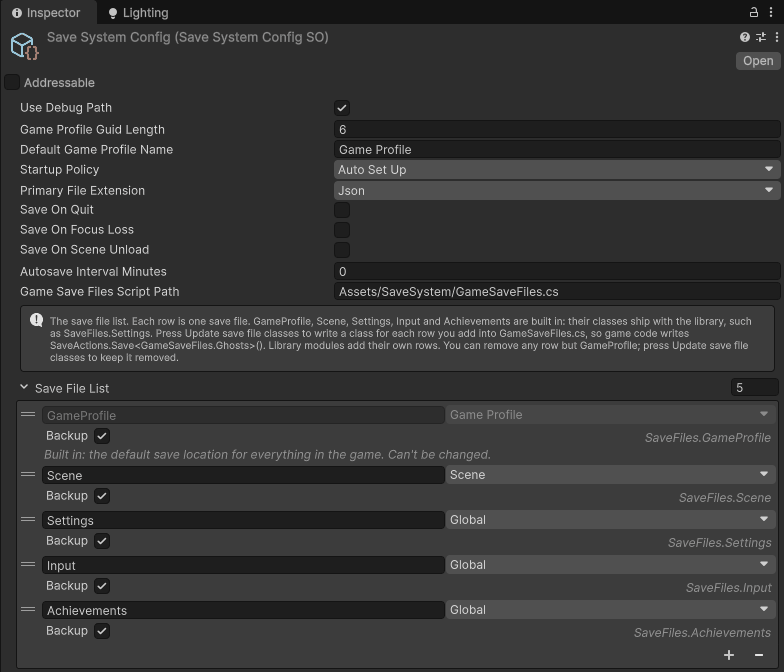

Choose where data goes 2 choices
With no choice, data goes in the built-in GameProfile file. Pick another with ISaveIn<TFile>.
Choose the save file#
Try it in the sample
Open sample 04: Pick A Save File →
Sample 04 · Pick A Save File
- Open the Pick A Save File scene and press Play.
- Change the volume and open a chest, then press Save and Reload scene.
Add ISaveIn<TFile> to a script to name its save file choice. A typo in the file's class name won't compile.
public class VolumeSetting : MonoBehaviour, ISaveIn<SaveFiles.Settings>
{
[Save] int volume = 5;
}
public class Chest : MonoBehaviour, ISaveIn<SaveFiles.Scene>
{
[Save] bool isOpen;
}Which save location each file lives in is under Save locations below. The list of files themselves is under Save files.
Save files#
The config holds a save file list. Each row is one save file, with a name, a save location, and a Backup box.
Every game has five built-in save files. Their classes ship with the library, so library modules and game code can both use them. You can't remove or rename them; only their Backup box changes.
| Built-in save file | Save location | For |
|---|---|---|
SaveFiles.GameProfile | Game Profile | One playthrough. The default when a script names no file. |
SaveFiles.Scene | Scene | One scene in one playthrough. |
SaveFiles.Settings | Global | Volume, graphics. The Settings module uses it. |
SaveFiles.Input | Global | Input bindings. |
SaveFiles.Achievements | Global | Achievements. |
Add rows for your own game save files, such as Ghosts. The editor writes their classes into GameSaveFiles.cs.
public static class GameSaveFiles
{
public sealed class Ghosts : ISaveFile { }
}SaveActions.Save<SaveFiles.Settings>();
SaveActions.Save<GameSaveFiles.Ghosts>();Renaming a row keeps its old data, because each row remembers the name it was saved under. A library module brings its own SaveFileDefaults file when no built-in one fits, and the editor adds its row for you.
GameSaveFiles.cs isn't written until you fix it.Save locations#
Each save file lives in one of three save locations. The row in the config decides which.
| Save location | Holds | Example |
|---|---|---|
| Global | Data every game profile shares | Settings, input bindings, achievements |
| Game Profile | One playthrough | Coins, inventory |
| Scene | One scene in one playthrough | Open chests in the Forest |
Switching game profiles keeps Global data and swaps the rest. An object in an additive scene saves into its own scene's file.
Config fields#
On SaveSystemConfigSO, at Assets/Resources/SaveSystemConfig.asset, made by Create Config.

| Config field | What it does |
|---|---|
| Use Debug Path | Saves into a folder inside the project instead of the player's save folder, so you can read the files while you work. |
| Startup Policy | AutoSetUp opens the last game profile before the first scene. Manual waits for your save slot screen. |
| Default Game Profile Name | The name every new game profile gets, followed by its slot number, such as "Game Profile 2". |
| Game Profile Guid Length | How many characters a game profile's folder name has. |
| Primary File Extension | The file type save files are written as. |
| Save On Quit, Save On Focus Loss | Autosave on quit, and when the game loses focus. Both off by default. |
| Save On Scene Unload, Autosave Interval Minutes | Autosave when a scene unloads, and every this many minutes. Both off by default. |
| Game Save Files Script Path | Where the editor writes GameSaveFiles.cs. |
| Save file list | One row per save file. See Save files above. |